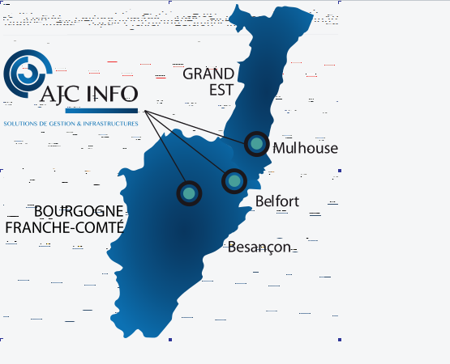

AJC INFO, une société à responsabilité limitée est active depuis 16 ans. Localisée à BELFORT (90000), elle est spécialisée dans le secteur d’activité du conseil en systèmes et logiciels informatiques. Elle est dirigée par gérante Sylvie CHIPAUX et compte actuellement 2 établissements actifs en plus de son siège social.
Créé le 10 janvier 2005 il y a 16 ans et d’après la RNCS (Registre national du commerce et des sociétés, la société de l’entreprise s’est formé le 14 janvier 2005. Une agence a été ouverte en 2008 à Mulhouse dans le Haut-Rhin (68), à Besançon (25) fin 2008 et à Strasbourg (67) en 2013.
AJC INFO, une société à responsabilité limitée est active depuis 16 ans. Localisée à BELFORT (90000), elle est spécialisée dans le secteur d’activité du conseil en systèmes et logiciels informatiques. Elle est dirigée par gérante Sylvie CHIPAUX et compte actuellement 2 établissements actifs en plus de son siège social.